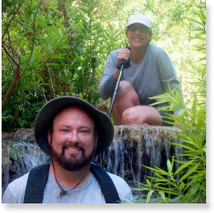

%20(Custom).jpg "June 2008 (L-R: Don, Kathy, Julie, Dave, Steve)")
.JPG "Tim and Kathy at Phantom Creek in the Grand Canyon")
Tim and Kathy, Phantom Creek, January 2006
(click on the photo for more hiking, canyoneering, and climbing
photos)

.JPG "Mom and Kathy in Mexico City, Dec. 2006")
.jpg "Julie at 2008 MARATHON!")
.jpg "Thanksgiving 2007 photos (L-R: Kathy, Don, Steve, Julie, Dave)")
Sharp Family Links
- Don Sharp
- Newer family photos at Flickr
- Older family photos at Shutterfly
- Kathy's hiking pages
- Kathy's Random Posts
- Kathy's PC Notes
- Tim's Brain Surgery
- New Zealand and Australia, 9/21 through 10/11/2007
- Mexico's Ancient Civilizations Tour, December 8-17, 2006
- How's Tanya Doing?
- Christmas Letter 2003
- Tanya's mom Linda's pages
.JPG "Roger, Julie, Helen, Steve, Kathy, Don on Grandma's 101st birthday, Jan. 2007")